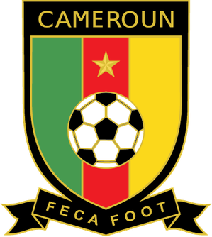
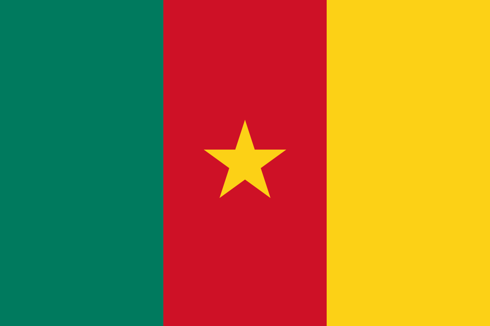
CAMERÚN
- ARQUEROS: Simon Ngapandouetnbu, Devis Epassy, Andre Onana.
- DEFENSORES: Nicolas Nkoulou, Christopher Wooh, Nouhou Tolo, Olivier Mbaizo, Collins Fai, Jean-Charles Castelletto, Enzo Ebosse.
- MEDIOCAMPISTAS: Olivier Ntcham, Pierre Kunde, Martin Hongla, Samuel Gouet, Gael Ondoua, Andre-Frank Zambo Anguissa, Jerome Ngom.
- DELANTEROS: Moumi Ngamaleu, Georges-Kevin Nkoudou, Vincent Aboubakar, Karl Toko Ekambi, Jean-Pierre Nsame, Bryan Mbeumo, Eric Maxim Choupo-Moting, Christian Bassogog y Marou Souaibou.
- DT: RIGOBERT SON.
GRUPO G:
- BRASIL
- SERBIA
- SUIZA
- CAMERÚN
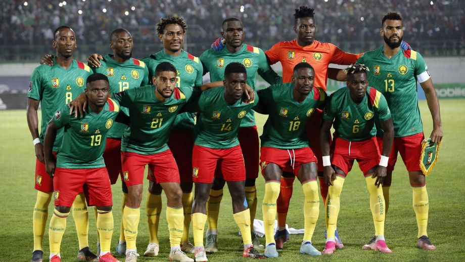
MUNDIALES JUGADOS:
ESPAÑA 1982 (fase de grupos), ITALIA 1990 (cuartos de final), USA 1994 (fase de grupos), FRANCIA 1998 (fase de grupos), COREA-JAPÓN 2002 (fase de grupos), SUDÁFRICA 2010 (fase de grupos), BRASIL 2014 (fase de grupos).
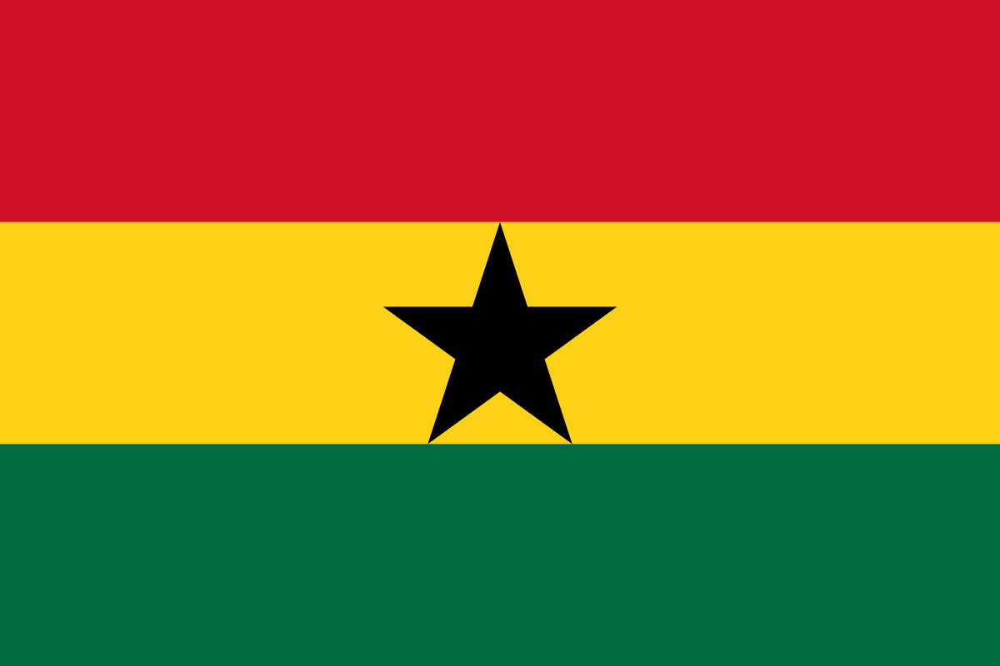
GHANA
- ARQUEROS: Manaf Nurudeen, Danlad Ibrahim y Lawrence Ati Zigi.
- DEFENSORES: Denis Odoi, Tariq Lamptey, Alidu Seidu, Daniel Amartey, Joseph Aidoo, Alexander Djiku, Mohammed Salisu, Abdul-Rahman Baba y Gideon Mensah.
- MEDIOCAMPISTAS: Andre Ayew, Thomas Partey, Elisha Owusu, Salis Abdul Samed, Mohammed Kudus y Daniel Kofi Kyereh.
- DELANTEROS: Daniel Barnieh Afriyie, Kamal Sowah, Issahaku Abdul Fatawu, Osman Bukari, Iñaki Williams, Antoine Semenyo, Jordan Ayew y Kamaldeen Sulemana.
- DT: OTTO ADDO.
GRUPO H:
- PORTUGAL
- GHANA
- URUGUAY
- COREA DEL SUR
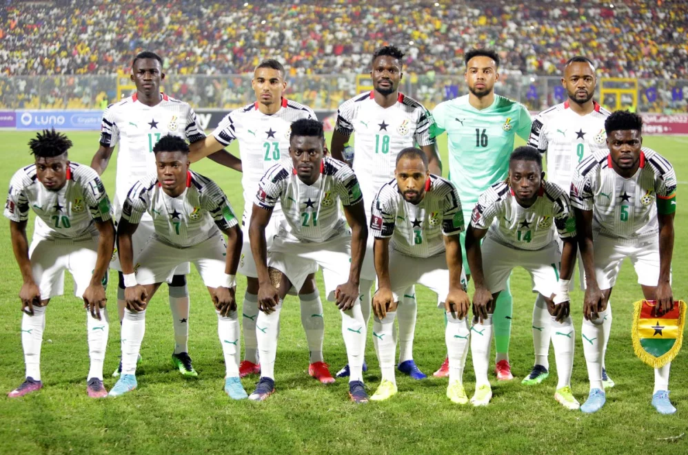
MUNDIALES JUGADOS:
ALEMANIA 2006 (octavos de final), SUDÁFRICA 2010 (cuartos de final), BRASIL 2014 (fase de grupos).
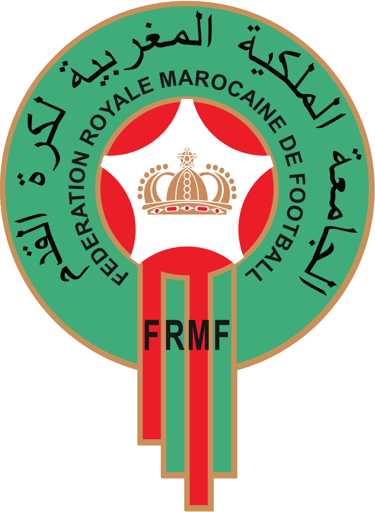
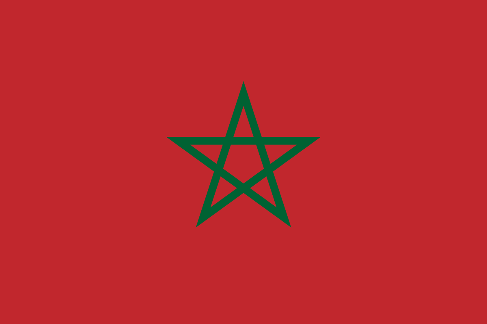
MARRUECOS
- ARQUEROS: Yassine Bono, Munir Elkajoui y Reda Tagnaouti.
- DEFENSORES: Yahya Attiat Allah, Badr Benoun, Noussair Mazraoui, Jawad El Yamiq, Achraf Hakimi, Nayev Aguerd, Romain Saiss y Achraf Dari.
- MEDIOCAMPISTAS: Abdelhamid Sabiri, Azzedine Ounahi, Sofyan Amrabat, Yahya Jabrane, Selim Amallah, Bilal Khanous y Amine Harit.
- DELANTEROS: Abderazak Hamdallah, Zakaria Aboukhlal, Youssef En-Nesyri, Abde Ezzalzouli, Soufian Boufal, Walid Cheddira, Hakim Ziyech e Ilyas Chair.
- DT: WALID REGRAGUI.
GRUPO F:
- BÉLGICA
- CANADÁ
- MARRUECOS
- CROACIA
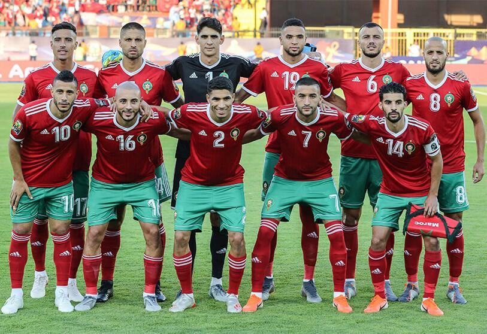
MUNDIALES JUGADOS:
MÉXICO 1970 (fase de grupos), MÉXICO 1986 (octavos de final), USA 1994 (fase de grupos), FRANCIA 1998 (fase de grupos), RUSIA 2018 (fase de grupos).
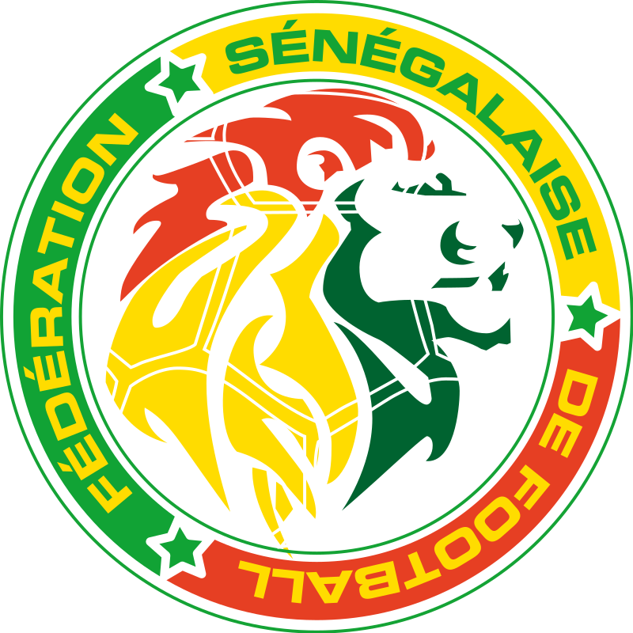
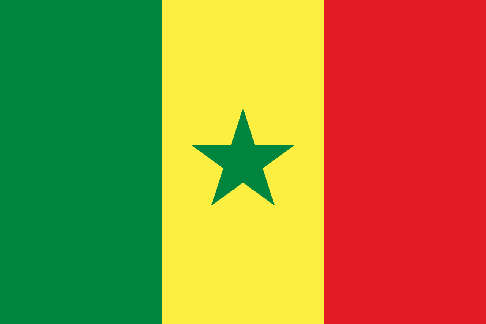
SENEGAL
- ARQUEROS: Edouard Mendy, Alfred Gomis y Seny Dieng.
- DEFENSORES: Kalidou Koulibaly, Abdou Diallo, Youssouf Sabaly, Fode Ballo Toure, Pape Abou Cisse, Ismail Jakobs y Formose Mendy.
- MEDIOCAMPISTAS: Gana Guegye, Cheikhou Kouyate, Nampalys Mendy, Krepin Diatta, Pape Gueye, Pape Matar Sarr, Pathe Ciss, Moustapha Name y Loum Ndiaye.
- DELANTEROS: Sadio Mané, Ismaila Sarr, Boulaye Dia, Bamba Dieng, Famara Diedhiou, Nicolas Jackson y Iliman Ndiaye.
- DT: ALIOU CISSÉ.
GRUPO A:
- QATAR
- ECUADOR
- SENEGAL
- PAÍSES BAJOS
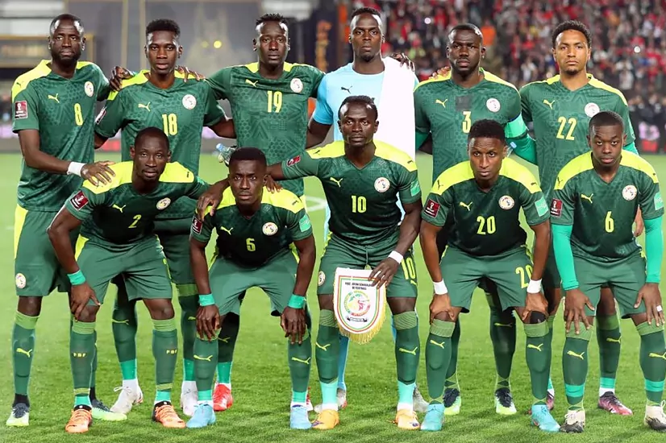
MUNDIALES JUGADOS:
COREA-JAPÓN 2002 (cuartos de final), RUSIA 2018 (fase de grupos).
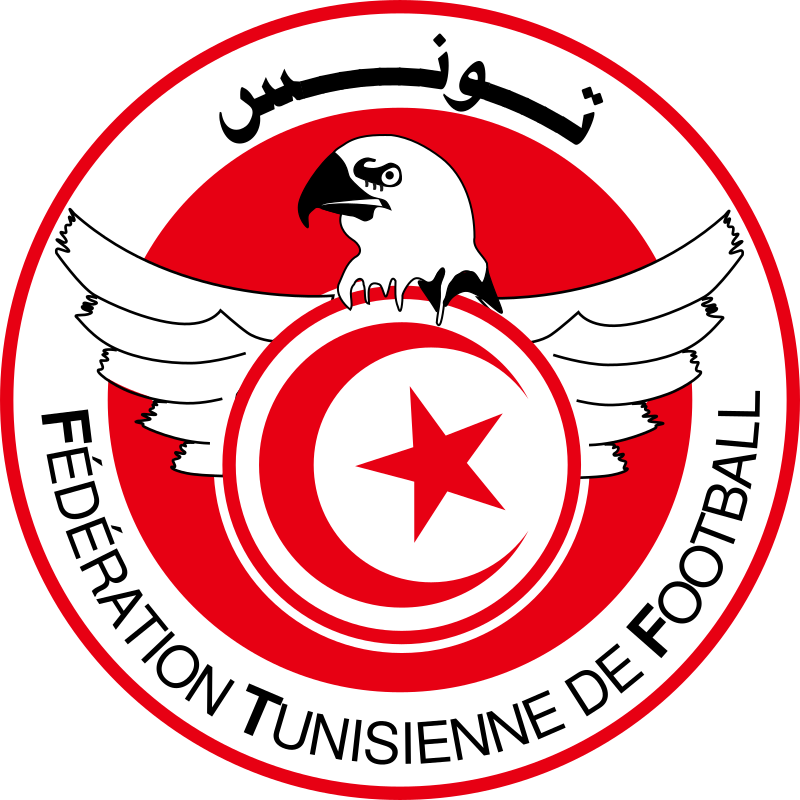

TÚNEZ
- ARQUEROS: Aymen Dahmen, Mouez Hassen, Aymen Mathlouth y Bechir Ben Said.
- DEFENSORES: Mohamed Drager, Wajdi Kechrida, Bilel Ifa, Montassar Talbi, Dylan Bronn, Yassine Meriah, Nader Ghandri, Ali Maalou y Ali Abdi.
- MEDIOCAMPISTAS: Ellyes Skhiri, Aissa Laidouni, Ferjani Sassi, Ghaylen Chaaleli, Mohamed Ali Ben Romdhane y Hannibal Mejbri.
- DELANTEROS: Seifeddine Jaziri, Naim Sliti, Taha Yassine Khenissi, Anis Ben Slimane, Issam Jebali, Wahbi Khazri y Youssef Msakni.
- DT: JALEL KADRI.
GRUPO D:
- FRANCIA
- AUSTRALIA
- DINAMARCA
- TÚNEZ
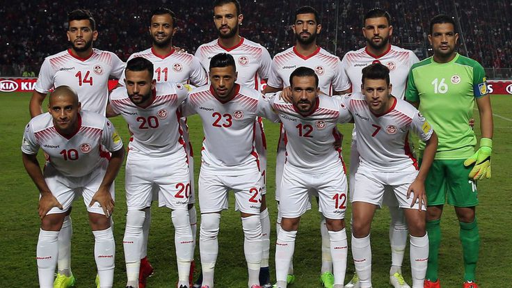
MUNDIALES JUGADOS:
ARGENTINA 1978 (fase de grupos), FRANCIA 1998 (fase de grupos), COREA-JAPÓN 2002 (fase de grupos), ALEMANIA 2006 (fase de grupos), RUSIA 2018 (fase de grupos).